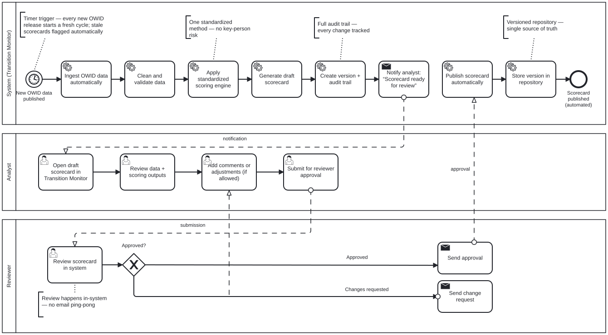
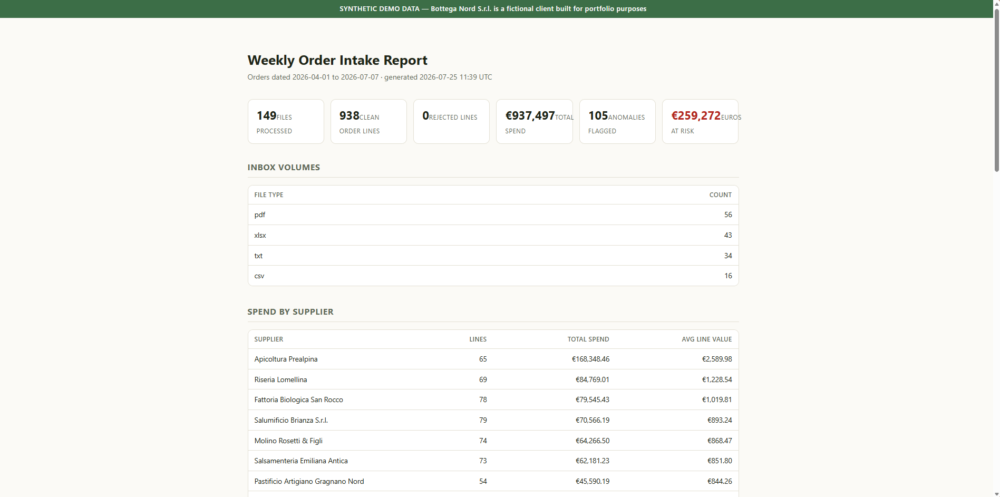
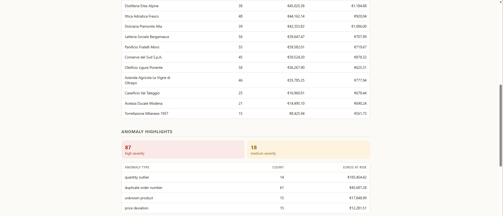

Senior Business Analyst & BI Specialist with 20+ years in operations and 6+ years in energy & EV infrastructure. I build analytical systems that scale — across countries, teams, and boardrooms.
I specialise in turning ambiguous business problems into scalable analytical systems — the kind that survive a CFO question at 8 AM on a Monday.
I've managed multi-country stakeholder environments (8+ countries simultaneously), built BI systems from scratch on Azure and Databricks, and presented investment analysis at board level. I speak fluent business and fluent data.
Based remotely in Italy. Currently available for project-based, fractional, and permanent engagements across Europe.
Real problems. Real solutions. Results you can take to a board meeting.
A country scorecard that took 15 working days, used a method living in one analyst's head, and silently went stale whenever the data updated. I mapped the AS-IS honestly, designed the TO-BE around a human review gate, modelled the data so every published number is traceable, and wrote the wireframes with their requirement IDs on the page.

Demo case study built on fully synthetic data. "Bottega Nord S.r.l." is a fictional client — every document was generated for the demo. The pipeline, and the problems it solves, are entirely real.
Bottega Nord, a specialty food distributor in Lombardy, receives ~800 supplier order confirmations a month — PDF invoices in three different layouts, Excel exports that never match, semicolon CSVs with Italian decimal commas, and orders typed straight into emails. Every Friday, ~6 hours disappeared into manual reconciliation. Duplicate invoices still got paid. Price increases still went unnoticed.


The data is synthetic. The pipeline isn't. If your team runs on supplier paperwork, spreadsheets nobody trusts, or an inbox that eats a day a week — this same architecture drops onto your data. Let's talk →
An inherited Excel model covering 10 EU markets had become unmaintainable — riddled with hardcoded values, broken as soon as a country changed a rate or assumption, and impossible to audit. Finance, Operations, and Country Leads were all working from different versions of the truth. The business needed a single, governed source of analytical truth that could answer utilisation and revenue questions across an entire European network — in real time.
SWARCO's Finance and Operations leadership needed visibility they couldn't get from their existing reports — scattered across systems, too slow to generate, and not designed for decision-making. On top of that, strategic investment decisions on EV charging infrastructure required a rigorous analytical framework that could survive board-level scrutiny. I was brought in to build both: the operational reporting layer and the investment analysis that went to the board.
Technical depth. Business fluency. End-to-end delivery.
Power BI, Tableau, DAX and Power Query. I build dashboards for decision-makers, not data engineers — clear, fast, and built to last.
Star-schema design, ETL pipelines, Azure Databricks. Systems that scale without needing constant maintenance or a team of engineers.
Frameworks for site profitability, market entry, and competitive intelligence. Turn raw data into strategic recommendations.
ROI models, scenario analysis, and board-ready outputs. I translate numbers into the language of investment decisions.
Managed 8+ countries simultaneously. 100% on-time delivery track record across 50+ EV deployment projects, with the stakeholder coordination that makes that possible.
Bridge builder between technical teams and business leadership. I present to boards and I can explain data to anyone.
BPMN 2.0 and UML in Enterprise Architect. AS-IS mapping, TO-BE design, and requirements with traceability — so a process map stops being a picture and becomes a specification a team can build from.
AgilePM® Practitioner. Epics and stories in Jira, requirements and decision logs in Confluence, sprint reviews that surface risk early. Structure where it earns its keep, not ceremony for its own sake.
Project-based engagements designed to deliver fast, tangible outcomes.
Stuck on a business question you can't quite answer with your current data? I come in, map the problem, analyse what you have, and deliver a structured brief with findings and recommendations. Fast, focused, actionable.
From messy data sources to clean, decision-ready dashboards your whole team can use. Includes data model design, dashboard build, and a handover session so you're not dependent on me to keep the lights on.
The repetitive work that eats your team's week — automated, tested, and documented. I connect your tools (CRM ↔ spreadsheets ↔ reporting) so they talk to each other, with AI handling the judgement calls. Built in Make — extending into custom Python pipelines when no-code hits its limits.
Some problems are too custom for no-code and too small for a dev agency. I direct AI (Claude Code) to build working tools for your business — document-processing pipelines, internal apps, data cleaners. You bring the messy process; I ship the tool that eats it.
For growing companies that need senior BI capability without the overhead of a full-time hire. I join your team part-time, own the analytics function, and help you build data habits that scale.
Before anyone writes code, someone has to say what the thing must actually do. I map how the work happens today in BPMN, model how the system needs to behave in UML, and write requirements traceable to a design, a backlog story and a test. Delivered in Enterprise Architect, Jira and Confluence — documentation your developers can build from and your auditors can follow.
Available now for remote projects and roles across Europe and the wider EMEA region. If you have a data problem, a BI gap, or a business question that needs answering — let's talk.